Глава 3. Линейные электрические цепи в режиме гармонических колебаний
3.1. Гармонические колебания. Основные понятия и определения3.2. Способы представления гармонических колебаний
3.3. Гармонические колебания в резистивных, индуктивных и емкостных элементах
3.4. Гармонические колебания в цепи при последовательном соединении R, L, С-элементов
3.5. Гармонические колебания в цепи при параллельном соединении R, L, С-элементов
3.6. Символический метод расчета разветвленных цепей
3.7. Электрические цепи с индуктивными связями
3.8. Особенности анализа индуктивно связанных цепей
3.9. Трансформатор
3.10. Баланс мощности
3.11. Модели электрических цепей с зависимыми источниками
Вопросы и задания для самопроверки
Глава 3. Линейные электрические цепи в режиме гармонических колебаний
3.1. Гармонические колебания. Основные понятия и определения
Электрические цепи могут находиться под воздействием постоянных или переменных напряжений и токов. Среди этих воздействий важнейшую роль играют гармонические колебания. Последние широко используются для передачи сигналов и электрической энергии, а также могут применяться в качестве простейшего испытательного сигнала. Исследование режима гармонических колебаний важно и с методической точки зрения, поскольку анализ электрических цепей при негармонических воздействиях можно свести к анализу цепи от совокупности гармонических воздействий. В этом смысле методику анализа и расчета цепей при гармонических воздействиях можно распространить и на цепи при периодических несинусоидальных, а также непериодических воздействиях (см. гл. 5, 9).
Гармоническое колебание i(t) (рис. 3.1) характеризуется
следующими основными параметрами: амплитудой Iт; угловой частотой
 , начальной
фазой
, начальной
фазой  i. Амплитудой называют максимальное абсолютное значение
тока i(t). Аналитически гармоническое колебание можно записать
в виде
i. Амплитудой называют максимальное абсолютное значение
тока i(t). Аналитически гармоническое колебание можно записать
в виде
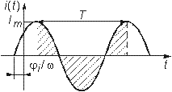
Рис. 3.1
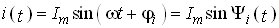
(3.1)где  i(t) =
i(t) =  t +
t +  i – называется текущей фазой (или просто фазой) гармонического колебания, так как она растет линейно во времени с угловой скоростью
i – называется текущей фазой (или просто фазой) гармонического колебания, так как она растет линейно во времени с угловой скоростью  = d
= d i/dt. Вместо формулы (3.1) гармоническое колебание можно выразить и в косинусоидальной форме:
i/dt. Вместо формулы (3.1) гармоническое колебание можно выразить и в косинусоидальной форме:
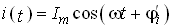
, (3.2)где  i' =
i' =  i +
i + /2.
/2.
Наименьший промежуток времени, по истечении которого значения функции i(t) повторяются, называется периодом Т. Между периодом Т и угловой частотой  существует простая связь:
существует простая связь:
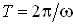
. (3.3)Величину, обратную периоду, называют циклической частотой: f = l/T. Из вышеизложенного следует, что  = 2
= 2 f. Единицей измерения частоты f является герц (Гц), угловой частоты
f. Единицей измерения частоты f является герц (Гц), угловой частоты  – радиан в секунду (рад/с). Так как радиан – величина безразмерная, то [
– радиан в секунду (рад/с). Так как радиан – величина безразмерная, то [ ] измеряется в 1/с или с–1.
] измеряется в 1/с или с–1.
В радиотехнике и электросвязи используют гармонические сигналы от долей герц (инфранизкие частоты) до десятков и сотен гигагерц (сверхвысокие частоты).
Для питания различных электроэнергетических установок в России и ряде других стран принята промышленная частота f = 50 Гц. В качестве источников гармонических колебаний промышленной частоты используются электромашинные генераторы различного типа. Принцип работы простейшего электромашинного генератора иллюстрирует рис. 3.2. В состав генератора входят: статор, создающий магнитное поле с магнитной индукцией В, и ротор, вращающийся в этом магнитном поле с угловой частотой  . При пересечении витками катушки ротора магнитного потока Ф в них согласно закону электромагнитной индукции наводится ЭДС
. При пересечении витками катушки ротора магнитного потока Ф в них согласно закону электромагнитной индукции наводится ЭДС
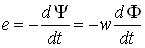
, (3.4)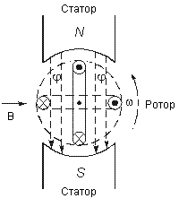
Рис. 3.2
где  = wФ – потокосцепление катушки с магнитными потоками; w – число витков катушки. При постоянной скорости вращения ротора для получения ЭДС синусоидальной формы применяются полюса специальной формы. Частота на выходе генератора
= wФ – потокосцепление катушки с магнитными потоками; w – число витков катушки. При постоянной скорости вращения ротора для получения ЭДС синусоидальной формы применяются полюса специальной формы. Частота на выходе генератора
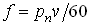
,где рп – число пар полюсов ротора; v – частота вращения ротора, об/мин.
Электромашинные генераторы используются для получения гармонических напряжений и токов не выше 5...8 кГц. Для получения гармонических сигналов более высоких частот обычно используются ламповые и полупроводниковые генераторы (см. гл. 15).
Важными параметрами гармонических колебаний являются их действующее и среднее значения. Действующее значение гармонического тока
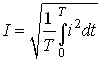
. (3.5)Здесь i = i(t) – мгновенное значение гармонического тока, которое определяется из выражения
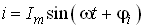
. (3.6)Подставив значение i из (3.6) в (3.5), после интегрирования для действующего значения тока получим
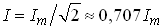
. (3.7)Аналогично (3.1)–(3.5) определяется мгновенное и действующее значения напряжения. Так, для действующего значения напряжения можно записать:
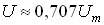
.Действующие значения токов и напряжений называют еще их среднеквадратическими значениями.
Определим тепловую энергию, которая выделяется гармоническим колебанием i(t) за период Т в резистивном элементе с сопротивлением R:
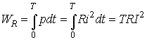
. (3.8)Таким образом, действующее значение тока численно равно такому постоянному току, который за период Т на том же сопротивлении выделяет то же количество тепла, что и гармонический ток.
Среднее значение гармонического тока
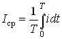
. (3.9)Подставив значение i из (3.6) в (3.9), находим, что Iср = 0. Этот результат вполне понятен, если учесть, что уравнение (3.9) определяет площадь, ограниченную кривой i(t) за период Т (см. рис. 3.1). Если значение тока определено за полпериода, то можно записать:
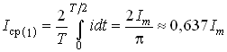
. (3.10)Аналогично определяем, что Uср(1)  0,637Um.
0,637Um.
3.2. Способы представления гармонических колебаний
Гармонические колебания можно представить различными способами: функциями времени (временные диаграммы) (см. рис. 3.1); вращающимися векторами (векторные диаграммы); комплексными числами; амплитудными и фазовыми спектрами. Тот или иной способ представления применяется в зависимости от характера решаемых задач.
Временное представление гармонических колебаний наглядно, однако его использование в задачах анализа цепей затруднительно, так как требует проведения громоздких тригонометрических преобразований. Более удобно векторное представление гармонических колебаний, при котором каждому колебанию ставится в соответствие вращающийся вектор определенной длины с заданной начальной фазой. В качестве примера на рис. 3.3 показано векторное представление двух колебаний токов i1 и i2:
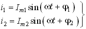
(3.11)Их сумму i3 легко можно найти по формулам суммирования векторов:
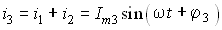
, (3.12)где
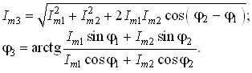
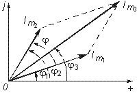
Рис. 3.3
Величина  =
=  2 –
2 –  1 называется фазовым сдвигом между колебаниями i1 и i2. Он определяется только начальными фазами
1 называется фазовым сдвигом между колебаниями i1 и i2. Он определяется только начальными фазами  1 и
1 и  2 и не зависит от начала отсчета времени. Нетрудно видеть, что суммирование (наложение) любого числа гармонических колебаний с частотой
2 и не зависит от начала отсчета времени. Нетрудно видеть, что суммирование (наложение) любого числа гармонических колебаний с частотой  приводит к гармоническому колебанию той же частоты
приводит к гармоническому колебанию той же частоты  .
.
Совокупность векторов, изображающих гармонические колебания в электрической цепи, называют векторной диаграммой. Векторные диаграммы можно строить как для амплитудных, так и для действующих значений токов и напряжений.
Наиболее распространенными являются представления гармонических колебаний с помощью комплексных чисел. Эти представления лежат в основе символического метода расчета электрических цепей – метода комплексных амплитуд. Представим ток i, определяемый формулой (3.6), на комплексной плоскости. Для этого изобразим вектор Im на комплексной плоскости с учетом начальной фазы 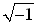 i, (рис. 3.4, а). Знаком “+” обозначено положительное направление вещественной оси, а j =
i, (рис. 3.4, а). Знаком “+” обозначено положительное направление вещественной оси, а j =  . Тогда в любой момент времени положение вращающегося вектора определится комплексной величиной (комплексным гармоническим колебанием):
. Тогда в любой момент времени положение вращающегося вектора определится комплексной величиной (комплексным гармоническим колебанием):
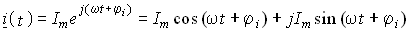
(3.13)Первая часть слагаемого (3.13) отражает проекцию вращающегося вектора на вещественную ось, а вторая часть – на мнимую ось. Сравнив второе слагаемое в (3.13) с (3.6), приходим к выводу: синусоидальный ток i на комплексной плоскости представляется в
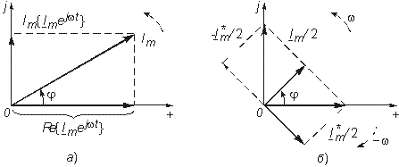
Рис. 3.4
форме проекции на мнимую ось вращающегося вектора (3.13)
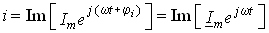
, (3.14)где Im – сокращенное обозначение слова Imaginarins (мнимый);
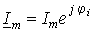
. (3.15)Величина Im носит название комплексной амплитуды тока.
Важным свойством комплексной амплитуды является то, что она полностью определяет гармоническое колебание заданной частоты  , так как содержит информацию об его амплитуде и начальной фазе.
, так как содержит информацию об его амплитуде и начальной фазе.
Если гармоническое колебание задается в форме косинусоиды, например
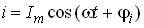
, (3.16)то на комплексной плоскости этому току соответствует проекция вектора (3.13) на вещественную ось:
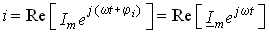
, (3.17)где Re – сокращенное обозначение слова Realis (действительный, вещественный).
Возможна и другая форма представления гармонических колебаний на комплексной плоскости. Учтем, что согласно формулам Эйлера
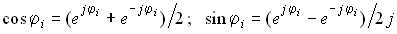
. (3.18)Тогда уравнение для тока i из (3.6) можно записать в виде
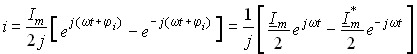
. (3.19)Аналогично для тока i из уравнения (3.16):
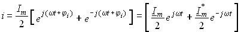
, (3.20)где
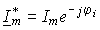
– сопряженная комплексная амплитуда тока.Таким образом, ток i из (3.6) согласно (3.19) можно
представить как геометрическую разность векторов Im/2
и Im*/2, вращающихся в противоположных направлениях
с угловой частотой  , а ток из (3.16) – как геометрическую сумму этих векторов (рис. 3.4, б).
В первом случае i располагается на мнимой, а во втором случае – на действительной
осях. Комплексную амплитуду синусоидальной функции заданной частоты можно рассматривать
как преобразование временной функции в частотную область.
, а ток из (3.16) – как геометрическую сумму этих векторов (рис. 3.4, б).
В первом случае i располагается на мнимой, а во втором случае – на действительной
осях. Комплексную амплитуду синусоидальной функции заданной частоты можно рассматривать
как преобразование временной функции в частотную область.
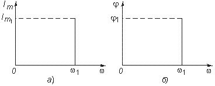
Рис. 3.5
Спектральное (частотное) представление гармонических колебаний состоит в задании амплитудного и фазового спектров колебания (рис. 3.5). Более подробно спектральное представление и методы анализа цепей, основанные на этом представлении, рассмотрены в гл. 5, 9.
3.3. Гармонические колебания в резистивных, индуктивных и емкостных элементах
Резистивные цепи. Пусть к резистивному элементу R приложено гармоническое напряжение
. (3.21)
Согласно закону Ома через элемент R будет протекать ток
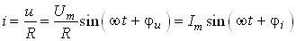
, (3.22)где Im = Um/R – амплитуда;  i =
i =  u – начальная фаза тока. Таким образом, ток i и напряжение и в резистивном элементе совпадают по фазе друг с другом (рис. 3.6, а). Средняя за период Т мощность, выделяемая в резисторе R,
u – начальная фаза тока. Таким образом, ток i и напряжение и в резистивном элементе совпадают по фазе друг с другом (рис. 3.6, а). Средняя за период Т мощность, выделяемая в резисторе R,
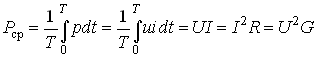
. (3.23)При последовательном или параллельном соединениях нескольких резистивных элементов ток в цепи определяется уравнением, аналогичным (3.22), где R определяется согласно (1.22) для последовательного и (1.27) для параллельного соединений элементов. При этом фазовый сдвиг между током и приложенным напряжением остается равным нулю.
Индуктивные цепи. Под действием напряжения (3.21) в индуктивном элементе будет протекать ток согласно (1.9):
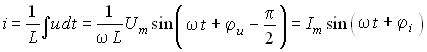
, (3.24)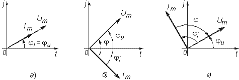
Рис.3.6
где Im = Um/( L) = Um/XL; XL =
L) = Um/XL; XL =  L – индуктивное сопротивление;
L – индуктивное сопротивление;  i =
i =  u –
u –  /2 – начальная фаза тока.
/2 – начальная фаза тока.
Величину, обратную XL, называют индуктивной проводимостью BL = 1/( L). Как следует из полученных выражений, ток в индуктивности отстает от приложенного напряжения на
L). Как следует из полученных выражений, ток в индуктивности отстает от приложенного напряжения на  /2, т. е. фазовый сдвиг между током i и напряжением и (рис. 3.6, б)
/2, т. е. фазовый сдвиг между током i и напряжением и (рис. 3.6, б)
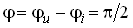
. (3.25)На векторной диаграмме фазовый сдвиг  откладывается от вектора тока к вектору напряжения. Нетрудно видеть, что средняя за период мощность в индуктивном элементе равна нулю.
откладывается от вектора тока к вектору напряжения. Нетрудно видеть, что средняя за период мощность в индуктивном элементе равна нулю.
При последовательном и параллельном соединениях индуктивных элементов ток в цепи определяется уравнением, аналогичным (3.24), где L находится согласно (1.23) для последовательного и (1.29) для параллельного соединений.
Емкостные цепи. Для емкостного элемента согласно уравнению (1.12) имеем:
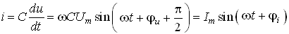
, (3.26)где Im =  CUm = BCUm; BC =
CUm = BCUm; BC =  C – емкостная проводимость;
C – емкостная проводимость;  i = =
i = =  u +
u +  /2 – начальная фаза тока. Величину, обратную BC, называют емкостным сопротивлением XC = 1/(
/2 – начальная фаза тока. Величину, обратную BC, называют емкостным сопротивлением XC = 1/( C). Фазовый сдвиг между током и напряжением на емкостном элементе
C). Фазовый сдвиг между током и напряжением на емкостном элементе
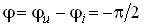
. (3.27)Из приведенных уравнений следует, что ток в емкости опережает приложенное напряжение на угол  /2 (рис. 3.6, в), причем знак “–” свидетельствует об отставании напряжения и от тока i. Средняя за период мощность в емкостной цепи также равна нулю.
/2 (рис. 3.6, в), причем знак “–” свидетельствует об отставании напряжения и от тока i. Средняя за период мощность в емкостной цепи также равна нулю.
При последовательном и параллельном соединениях емкостных элементов ток в цепи определяется согласно (3.26), где С находится из (1.24) для последовательного и (1.28) для параллельного соединений.
3.4. Гармонические колебания в цепи при последовательном соединении R, L, С-элементов
Допустим, что в цепи, содержащей последовательно соединенные элементы R, L, С (рис. 3.7), протекает ток
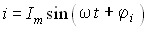
. (3.28)Согласно ЗНК напряжение на отдельных участках цепи определяется уравнением
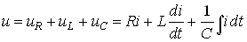
. (3.29)Подставив в (3.29) значение тока из (3.28), получим
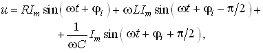
или
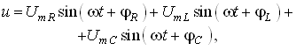
(3.30)где
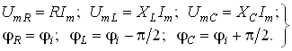
(3.31)На рис. 3.8 изображена векторная диаграмма напряжений, описываемых уравнений (3.30).
Напряжение UmR на резистивном сопротивлении R называется активной составляющей приложенного напряжения и обозначается Uma = UmR, разность напряжений Ump = UmL – UmC называется реактивной составляющей. Согласно этому определению и формулам (3.31) имеем:
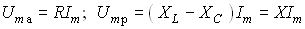
. (3.32)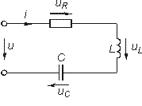
Рис. 3.7
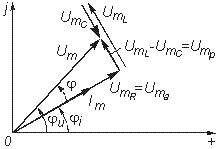
Рис. 3.8
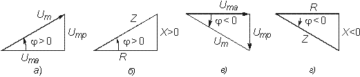
Рис. 3.9
Величина X = XL – XC =  L – 1/(
L – 1/( C) называется реактивным сопротивлением, а величина
C) называется реактивным сопротивлением, а величина
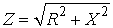
(3.33)– полным сопротивлением цепи.
Треугольник на векторной диаграмме, образованный напряжениями Uma, Ump, Um называют треугольником напряжений. Если UmL > UmC (XL > XC), то цепь носит индуктивный характер (приложенное напряжение опережает ток) и треугольник напряжений имеет вид, изображенный на рис. 3.9, а; если UmL < UmC (XL < XC), то цепь носит емкостный характер (приложенное напряжение отстает от тока) и треугольник напряжений принимает вид, изображенный на рис. 3.9, в. Треугольник со сторонами R, X, Z подобный треугольнику напряжений, называется треугольником сопротивлений (рис. 3.9, б, г). Из треугольников сопротивлений и напряжений следует:
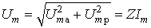
, (3.34)
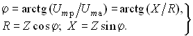
(3.35)Треугольники напряжений и сопротивлений позволяют упростить анализ электрической цепи.
3.5. Гармонические колебания в цепи при параллельном соединении R, L, С-элементов
Приложим к цепи, содержащей параллельно соединенные элементы R, L, С (рис. 3.10), напряжение
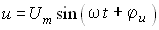
. (3.36)Согласно ЗТК ток в неразветвленной части цепи
. (3.37)
Подставив значение напряжения и из (3.36) в (3.37), получим
Рис. 3.10
Рис. 3.11
(3.38)
Перепишем уравнение (3.38) в виде
(3.39)
где
(3.40)
На рис. 3.11 изображена векторная диаграмма токов, описываемых уравнением (3.39).
Ток в резистивном сопротивлении ImR называют активной составляющей тока Ima, а разность тока Imp = ImL – ImC – реактивной составляющей тока. Для Ima и Imp справедливы соотношения
. (3.41)
Величина B = BL – BC = 1/( L) –
L) –  C называется реактивной проводимостью цепи, а величина
C называется реактивной проводимостью цепи, а величина
(3.42)
– полной проводимостью цепи.
По аналогии с треугольником напряжений и сопротивлений при параллельном соединении элементов можно ввести треугольники токов и проводимостей (рис. 3.12, а, б).
Рис. 3.12
Как следует из этих рисунков, при ImL > ImC (BL > BC) цепь носит индуктивный характер (общий ток отстает от приложенного напряжения) и при ImL < ImC (BL < BC) – емкостный характер (ток опережает приложенное напряжение). Из треугольников токов и проводимостей следует:
(3.43)
Сравнение треугольников токов и проводимостей с треугольниками напряжений и сопротивлений показывает их дуальный характер. Дуальны также и все соотношения, описывающие цепи при последовательном и параллельном соединении элементов, дуальны и сами цепи.
3.6. Символический метод расчета разветвленных цепей
Расчет разветвленных цепей при смешанном соединении элементов в режиме гармонических колебаний обычно осуществляется символическим методом. Это объясняется тем, что классический метод расчета приводит к громоздким интегрально-дифференциальным уравнениям и требует большого объема тригонометрических преобразований. Символический метод позволяет тригонометрические операции над гармоническими колебаниями и геометрические операции над векторами свести к алгебраическим операциям над комплексными числами, что существенно упрощает расчет. При этом могут быть использованы все методы преобразований и анализа, изложенные в гл. 1, 2. Допустимость использования символического метода объясняется тем, что в линейных цепях в режиме гармонических воздействий в цепи устанавливаются гармонические колебания той же частоты. Таким образом, неизвестными параметрами токов и напряжений будут лишь амплитуды и фазы, определяемые однозначно их комплексными амплитудами. Запишем основные законы электрических цепей в символической форме.
Для резистивного элемента R связь между комплексными амплитудами тока Im и напряжения Um можно определить согласно закону Ома (1.6) путем замены мгновенных значений токов i и напряжений и их комплексными амплитудами:
. (3.44)
Для индуктивного элемента L связь между Im и Um определяется согласно (1.9) с учетом (3.24):
, (3.45)
где j = ej /2 – множитель, характеризующий фазовый сдвиг между векторами тока Im и напряжения Um (см. рис. 3.6). Уравнение (3.45) отражает закон Ома для индуктивных элементов. Сравнение (3.45) с (1.9) показывает, что операция дифференцирования d/dt соответствует в комплексной форме умножению на j
/2 – множитель, характеризующий фазовый сдвиг между векторами тока Im и напряжения Um (см. рис. 3.6). Уравнение (3.45) отражает закон Ома для индуктивных элементов. Сравнение (3.45) с (1.9) показывает, что операция дифференцирования d/dt соответствует в комплексной форме умножению на j .
.
Для емкостного элемента С на основании (1.12) можно записать:
, (3.46)
т. е. операция интегрирования соответствует в комплексной форме делению на j . Полученные уравнения (3.44)–(3.46) справедливы и для комплексных действующих значений токов и напряжений:
. Полученные уравнения (3.44)–(3.46) справедливы и для комплексных действующих значений токов и напряжений:
(3.47)
где ; .
Аналогично можно получить уравнения законов Кирхгофа в комплексной форме. Так, для ЗТК (1.16) заменив мгновенные значения токов ik их комплексными амплитудами Imk, получим
, (3.48)
а для ЗНК (1.17)
. (3.49)
Полученные уравнения законов Ома и Кирхгофа в комплексной форме лежат в основе символического метода расчета линейных цепей при гармонических воздействиях. Причем, как показывает анализ уравнений (3.24), (3.26), (3.45) и (3.46), при переходе к комплексной записи операции дифференцирования заменяются умножением на j , операции интегрирования – делением на j
, операции интегрирования – делением на j . В результате вместо системы интегрально-дифференциальных уравнений получаем систему алгебраических уравнений, решение которой определяет амплитуды и начальные фазы искомых токов и напряжений.
. В результате вместо системы интегрально-дифференциальных уравнений получаем систему алгебраических уравнений, решение которой определяет амплитуды и начальные фазы искомых токов и напряжений.
Применим символический метод к анализу гармонических колебаний в цепи при последовательном (см. § 3.4) и параллельном (см. § 3.5) соединениях элементов R, L, С. Для последовательного соединения R, L, С согласно ЗНК (3.49) имеем Um = UmR + + UmL + UmC или с учетом (3.44), (3.45), (3.46):
. (3.50)
Величина Z в уравнении (3.50) есть комплексное сопротивление цепи:
. (3.51)
Рис. 3.13
Рис. 3.14
Комплексное сопротивление Z можно выразить в показательной или тригонометрической форме:
. (3.52)
Таким образом, рассмотренное ранее полное сопротивление цепи (3.33) представляет собой модуль комплексного сопротивления:
,
а фазовый сдвиг  – аргумент (arg) комплексного сопротивления:
– аргумент (arg) комплексного сопротивления:
.
Аналогичным образом можно получить уравнения токов и напряжений в комплексной форме для параллельного соединения элементов R, L, С (см. § 3.5). Так уравнение (3.39) в комплексной форме примет вид
. (3.53)
Величина Y в (3.53) есть комплексная проводимость цепи:
. (3.54)
Следовательно, полная проводимость цепи Y равна модулю комплексной проводимости Y = |Y|, а фазовый сдвиг  – аргументу комплексной проводимости
– аргументу комплексной проводимости  = arg Y = arctg(B/G).
= arg Y = arctg(B/G).
При анализе различных электрических цепей часто возникает необходимость преобразования схемы последовательно соединенных элементов в эквивалентное параллельное соединение и наоборот (рис. 3.13). В основе подобных преобразований лежит принцип эквивалентности (см. § 1.5). Согласно этому принципу ток I и напряжение U12 в исходной (рис. 3.13, а) и преобразованной (рис. 3.13, б) схемах должны остаться неизменными. Для первой схемы I = U12/Z, для второй I = U12Y. Из равенства токов I и напряжений U12 для обеих схем имеем:
. (3.55)
Из равенства (3.55) следуют формулы преобразования параллельного участка (рис. 3.13, б) в эквивалентный последовательный (рис. 3.13, а):
. (3.56)
Аналогично из равенства Y = 1/Z можно получить формулы преобразования последовательного участка (рис. 3.13, а) в эквивалентный параллельный (рис. 3.13, б):
. (3.57)
Преобразование (3.56) и (3.57) можно положить в основу разложения тока в последовательном участке и напряжения в параллельном на активную и реактивную составляющие.
Пример. Преобразовать последовательный RС-участок (рис 3.14, а) в эквивалентный параллельный (рис. 3.14, б). Определить активные и реактивные составляющие токов и напряжений на обоих участках.
В соответствии с уравнением (3.57) получаем
.
Из рис. 3.14 находим уравнения для активной и реактивной составляющих напряжения и тока:
.
Символический метод особенно эффективен при анализе сложных разветвленных цепей. Причем поскольку все методы расчета подобных цепей (метод контурных токов, узловых потенциалов, наложения и др.) базируются на законах Ома и Кирхгофа, то эти методы могут использоваться и при комплексной форме с заменой соответствующих величин (токов, напряжений, сопротивлений, проводимостей) их комплексными значениями.
Пример. Проиллюстрируем это на примере расчета цепи, изображенной на рис. 3.15 различными методами в комплексной форме. Заменим элементы ветвей в исходной схеме их комплексными сопротивлениями, а источники напряжения и токи их комплексными значениями (рис. 3.16):
.
Рассчитаем теперь эту цепь различными методами в символической форме, используя комплексы действующих значений токов и напряжений.
Рис. 3.15
Рис. 3.16
1. Метод наложения. Сравнение схем, изображенных на рис. 3.16 и рис. 2.5. а показывает их одинаковую топологию. Таким образом, путем перехода от R к Z, от Uг к Uг и от I к I можно сразу получить соответствующие уравнения для токов I1, I2, I3 (см. § 2.3).
2. Метод контурных токов. В соответствии с § 2.4 составляем систему из двух уравнений для контуров I и II:
(3.58)
где
.
Решая систему (3.58) согласно (2.14), (2.15), получаем
,
где , – алгебраические дополнения определителя .
Токи ветвей найдутся из равенств: .
3. Метод узловых потенциалов. В соответствии с этим методом (§ 2.5) для заданной схемы, согласно (2.27) необходимо составить только одно уравнение для узла 1:
,
где
.
Тогда . Токи найдем по закону Ома для участка цепи в комплексной форме:
.
При этом должен выполняться ЗТК: .
4. Метод эквивалентного генератора. Определим ток I3 методом эквивалентного генератора напряжения. Разомкнув ветвь с Z3 по аналогии с рис. 2.12, б, получим уравнения .
Ток I3 найдем из (2.34) записанного
в комплексной форме: .
После определения комплексных значений токов I и напряжений U
можно записать уравнения для мгновенных значений i и u. Так, если
угловая частота задающих источников синусоидальных колебаний uг1
и uг2 равна  , то мгновенное значение тока ,
где ; ;
.
, то мгновенное значение тока ,
где ; ;
.
Аналогичным образом осуществляется преобразование электрических цепей, содержащих комплексные сопротивления. Комплексные сопротивления, соединенные звездой преобразуются в треугольник путем замены в формулах (2.6)–(2.9) параметров R и G на соответствующие комплексы Z и Y. Точно также осуществляется обратное преобразование треугольник–звезда.
Например, с учетом уравнений (1.9) и (1.12) можно получить формулы преобразования “звезда–треугольник” индуктивных и емкостных элементов. Так, для емкостных элементов при преобразовании “треугольник–звезда” имеем:
(3.59)
а при обратном преобразовании “звезда–треугольник”
(3.60)
Преобразование “треугольник–звезда” и обратно для индуктивных элементов осуществляется по формулам, аналогичным (2.6)–(2.8).
Подобным же образом преобразуются матрично-топологические уравнения цепей в комплексную форму. Например, матричные уравнения (1.18), (1.20), (2.17) в комплексной форме принимают следующий вид:
, (3.61)
. (3.62)
Закон Ома: (при наличии ветвей с источниками тока Jгв):
. (3.63)
Уравнение равновесия узлов потенциалов (2.33) с учетом Jгв:
. (3.64)
Уравнение равновесия контурных токов (2.23)
, (3.65)
где Yв, Yy – матрицы комплексной проводимости ветвей и комплексной узловой проводимости.
Zв, Zк – матрица комплексного сопротивления ветви и матрица комплексного контурного сопротивления.
Uгв, Jгв, Uв — матрицы-столбцы комплексных задающих напряжений и токов ветви и напряжений ветвей.
3.7. Электрические цепи с индуктивными связями
В предыдущих параграфах этой главы рассматривались цепи без учета явления взаимной индукции. В то же время, при протекании тока i1 в катушке индуктивности с параметром L1 в окружающем пространстве согласно закону электромагнитной индукции создается магнитный поток Ф11 (рис. 3.17, а). Если какая-либо часть этого потока Ф12 пронизывает витки другой катушки с L2, то в последней наводится ЭДС взаимной индукции, определяемая законом Максвелла—Фарадея:
, (3.66)
где коэффициент M12 носит название взаимной индуктивности катушек L1 и L2. Единица измерения взаимной индуктивности — М генри (Гн).
Знак “–” в уравнении (3.66) определяется согласно правилу Ленца направлением индукционного тока, который имеет такую ориентацию, чтобы создаваемый им магнитный поток препятствовал тому изменению магнитного потока Ф12, которое этот ток вызывает. Напряжение взаимоиндукции на зажимах катушки индуктивности L2:
. (3.67)
Рис. 3.17
Если напряжение и приложено к катушке индуктивности L2, то под действием тока i2 в катушке L1 также будет наведена ЭДС взаимной индукции:
. (3.68)
В соответствии с принципом взаимности (см. § 1.7) для линейных цепей M12 = M21.
Рассмотренная ниже индуктивная связь носит односторонний характер: ток i1 вызывает ЭДС взаимоиндукции еM2, или ток i2 – ЭДС еM1. В случае замыкания катушки L2 на конечное сопротивление R (рис. 3.17, б) в последней под воздействием uM2, потечет индукционный ток i2, который в свою очередь, вызовет в первой катушке L1 ЭДС взаимоиндукции еM1 (3.68). Таким образом, установится двухсторонняя индуктивная связь катушек L1 и L2. При этом каждая из катушек L1 и L2 будет пронизываться двумя магнитными потоками: самоиндукции, вызванным собственным током, и взаимоиндукции, вызванным током другой катушки. Следовательно, в катушке L1 индуцируется ЭДС
, (3.69)
а в катушке L2 ЭДС
. (3.70)
Взаимное направление потоков само- и взаимоиндукции зависит как от направления токов в катушках, так и от их взаимного расположения.
Если катушки включаются таким образом, что потоки само- и взаимоиндукции складываются, то такое включение называется согласным. Если же потоки само- и взаимоиндукции вычитаются, то такое включение принято называть встречным. На рис. 3.17, б показан случай согласного включения.
Степень связи между L1 и L2 оценивается коэффициентом связи
. (3.71)
где коэффициенты
(3.72)
характеризуют одностороннюю связь между катушками L1 и L2. Магнитные потоки Ф12, Ф21, Ф11 и Ф22 можно выразить через параметры катушек L1, L2, М12, М21 и токи i1, i2 с помощью формул
(3.73)
где  1,
1,  2 – число витков катушек L1 и L2
соответственно.
2 – число витков катушек L1 и L2
соответственно.
Рис. 3.18
Рис. 3.19
После подстановки (3.73) в (3.71) с учетом (3.72) получим для коэффициента связи
, (3.74)
где М12 = М21 = М.
Значение k изменяется в пределах от 0 (отсутствие связи) до 1 (жесткая или полная связь). Индуктивная связь существенным образом зависит от потоков рассеяния Ф1s и Ф2s, поэтому степень связи иногда характеризуют коэффициентом рассеяния 2 = 1 – k2.
Для компактности и удобства изображения схем электрических цепей с взаимной индуктивностью вводят понятие одноименных зажимов. Последними принято называть узлы, относительно которых одинаково ориентированные токи создают складывающиеся потоки само- и взаимоиндукции. На рис. 3.18 схематично изображены одноименные зажимы для случая согласного и встречного включений катушек L1 и L2. Следовательно, для определения вида включения L1 и L2 на схеме достаточно определить, как ориентированы токи i1 и i2 относительно одноименных зажимов (на рис. 3.18 обозначены точкой): при одинаковой ориентации имеем согласное (рис. 3.18, а), а при разной – встречное включение (рис. 3.18, б).
Учет взаимной индуктивности существенно влияет на результаты анализа электрических цепей. Рассмотрим последовательное и параллельное соединение индуктивно-связанных катушек с индуктивностями L1 и L2 и потерями R1 и R2, находящихся под действием гармонического напряжения:
(3.75)
Последовательное соединение. Для согласного включения катушек (см. рис. 3.19, а) в соответствии с ЗНК и уравнениями (3.66) и (3.67) можно записать:
Рис. 3.20
(3.76)
В комплексной форме уравнение (3.76) согласно § 3.6 запишется в виде
. (3.77)
Обозначим через Z комплексное эквивалентное сопротивление всей цепи при согласном включении катушек
, (3.78)
где
. (3.79)
Тогда уравнение (3.77) можно записать в виде
, (3.80)
отражающем закон Ома для рассматриваемой цепи.
Фазовый сдвиг между током i и приложенным напряжением и
. (3.81)
На рис. 3.20, а изображена векторно-топографическая диаграмма напряжений на отдельных элементах цепи при согласном включении L1 и L2.
Комплексное напряжение на катушке L1 с потерями R1 равно
. (3.82)
Аналогично определяется комплексное напряжение на второй катушке L2 с потерями R2:
. (3.83)
При встречном включении катушек (см. рис. 3.19, б) уравнения (3.76) и (3.77) принимают вид
(3.84)
. (3.85)
Комплексное эквивалентное сопротивление цепи при встреч- ном включении
, (3.86)
где
(3.87)
– эквивалентная индуктивность цепи при встречном включении катушек индуктивности.
Как следует из (3.78) и (3.87) эквивалентная индуктивность при согласном включении больше на 2М, а при встречном меньше на 2М суммарной индуктивности L1 + L2.
Уравнения для тока I, фазового сдвига  эв и напряжений U1, U2 аналогичны (3.80)–(3.83):
эв и напряжений U1, U2 аналогичны (3.80)–(3.83):
(3.88)
На рис. 3.20, б изображена векторно-топографическая диаграмма напряжений для случая встречного включения. При встречном включении катушек может наблюдаться “емкостный эффект”, когда фазовый сдвиг между током и напряжением одной из катушек будет отрицательный. Это может иметь место при выполнении условия L2 < M. В этом случае UL2 < UМ и
(3.89)
и напряжение U2 будет отставать от тока I. Однако вся цепь всегда будет носить индуктивный характер, так как при любых значениях параметров L1, L2 и М справедливо условие
. (3.90)
Это непосредственно следует из условия, что при , L1 + L2 – 2M > 0. Действительно, поскольку , то . Но из (3.74) находим, что (так как k l), следовательно, L1 + L2 > 2M – отсюда и следует условие (3.90).
Уравнения (3.79) и (3.87) можно положить в основу экспериментального определения взаимной индуктивности М. Для этого достаточно определить ток I, напряжение U, мощность Р в цепи при согласном и встречном включениях катушек и найти
,
Рис. 3.21
где индексы “с” и “в” относятся к согласному и встречному включениям.
Реактивные составляющие комплексных сопротивлений при согласном и встречном включениях можно определить как
.
Отсюда, учитывая, что и , находим взаимную индуктивность:
. (3.91)
Параллельное соединение. Для случая согласного включения катушек (рис. 3.21, а) в соответствии с ЗТК и ЗНК можно записать:
(3.92)
где .
Решая систему (3.92) относительно I1 и I2, получаем
(3.93)
Выражения, стоящие в знаменателях (3.93), имеют смысл эквивалентных комплексных сопротивлений индуктивно связанных ветвей Z1эc и Z2эc:
(3.94)
Эти сопротивления складываются из двух составляющих: собственных сопротивлений ветвей Z1 и Z2 и сопротивлений, вносимых за счет индуктивных связей Z1внс и Z2внс:
. (3.95)
Рис. 3.22
Комплексные вносимые сопротивления Z1внс и Z2внс можно определить, решив совместно (3.94) и (3.95):
(3.96)
Ток в неразветвленной части цепи I с учетом (3.93)
,
где
. (3.97)
Нетрудно видеть, что в случае отсутствия индуктивной связи (Z12 = Z21 = 0) эквивалентное комплексное сопротивление цепи Zэс = Z1Z2/(Z1 + Z2), что соответствует известной формуле параллельного соединения Z1 и Z2.
На рис. 3.22, а изображена векторно-топографическая диаграмма для случая согласного включения L1 и L2. Аналогичным образом можно получить соответствующие уравнения для встречного включения катушек (см. рис. 3.21, б). При этом необходимо учесть, что в уравнениях перед слагаемыми с Z12 и Z21 необходимо заменить знак на противоположный. Так, уравнения (3.94), (3.96), (3.97) принимают вид
(3.98)
(3.99)
. (3.100)
На рис. 3.22, б изображена векторно-топографическая диаграмма для случая встречного включения.
Из уравнений (3.94), (3.98) нетрудно найти эквивалентные индуктивности ветвей:
(3.101)
где знак “–” относится к согласному, а “+” – к встречному включению индуктивно связанных элементов.
3.8. Особенности анализа индуктивно связанных цепей
При расчете индуктивно связанных цепей обычно используют законы Кирхгофа и метод контурных токов. Другие методы либо нецелесообразно использовать из-за громоздкости решения, либо нельзя применять вследствие наличия индуктивной связи (методы узловых потенциалов, эквивалентного генератора). Для того чтобы можно было использовать все рассмотренные ранее методы расчета, применяют “развязку” индуктивных связей. Рассмотрим сущность этих методов на примере цепи, схема которой изображена на рис. 3.23.
Расчет по законам Кирхгофа. Составим уравнения по ЗТК и ЗНК, в комплексной форме:
(3.102)
При составлении уравнений по ЗНК необходимо пользоваться следующим правилом знаков: напряжение взаимоиндукции, создаваемое в k-й ветви от тока, протекающего в l-й ветви, берется со знаком “+”, если направление обхода k-й ветви и положительное направление тока в l-й ветви одинаково ориентировано относительно одноименных зажимов. В противном случае берется знак “–”.
Решая систему (3.102), получаем искомые токи I1, I2 и I3.
Метод контурных токов. В соответствии с этим методом (см. § 2.4) и правилом знаков уравнения для контурных токов Iк1 и Iк2 (см. рис. 3.23) принимают вид
(3.103)
Решая систему (3.103), находим контурные токи Iк1 и Iк2, а затем токи ветвей I1 = Iк1; I2 = Iк1 – Iк2; I3 = Iк2.
Рассмотренные методы можно обобщить на схемы произвольной конфигурации.
Рис. 3.23
Развязка индуктивных связей. Расчет индуктивно связанных цепей существенно упрощается, если использовать эквивалентные схемы, не содержащие в явном виде индуктивные связи. Составление подобных эквивалентных схем и составляет сущность метода “развязки” индуктивных связей. При этом эквивалентные связи учитываются в эквивалентных индуктивностях развязанных схем. Примером подобной развязки могут служить эквивалентные индуктивности, определяемые уравнениями (3.79), (3,87), (3.101).
В общем случае развязку любых двух индуктивно связанных элементов
L1 и L2, соединенных
в одном узле (рис. 3.24, а) можно осуществить с помощью схемы, изображенной
на рис. 3.24, б для случая, когда элементы L1
и L2 соединены в узле 0' одноименными зажимами
(* ) и с помощью схемы на рис. 3.24, в
для соединения L1 и L2
в узле 0' разноименными зажимами ( ). Для доказательства эквивалентности этих схем достаточно составить уравнения
по законам Кирхгофа для каждой из них и доказать их идентичность. Действительно,
для случая включения одноименными зажимами для схемы на рис. 3.24, а
имеем:
). Для доказательства эквивалентности этих схем достаточно составить уравнения
по законам Кирхгофа для каждой из них и доказать их идентичность. Действительно,
для случая включения одноименными зажимами для схемы на рис. 3.24, а
имеем:
(3.104)
Для развязной схемы на рис. 3.24, б имеем:
Рис. 3.24
Рис. 3.25
(3.105)
Учитывая, что I1 = I – I2 и I2 = I – I1 после подстановки I1 и I2 в (3.104) получаем уравнения, аналогичные (3.105). Подобным же образом доказывается эквивалентность и второй схемы при включении L1 и L2 разноименными зажимами.
В качестве примера на рис. 3.25 изображена схема с развязанными индуктивными связями, эквивалентная изображенной на рис. 3.23. После развязки индуктивных связей расчет полученной эквивалентной схемы может быть осуществлен любым из известных методов.
Наличие индуктивных связей приводит к изменению матрицы сопротивления Zв и проводимости Yв. Из диагональных матриц они превращены в квадратные матрицы, по диагонали которых записываются собственные комплексные сопротивления или проводимости ветвей, а на пересечении k-й строки и l-го столбца записываются сопротивления или проводимости взаимной связи между k-й и l-й ветвями со знаком “+” при согласном включении и со знаком “–” при встречном.
Если цепь удовлетворяет условию взаимности (см. § 2.4), то Zkl = Zlk, Ykl = Ylk и матрица будет симметрична относительно главной диагонали.
Например, матрица сопротивлений цепи, изображенной на рис. 3.23, имеет вид
,
3.9. Трансформатор
Трансформатором называется статическое устройство, предназначенное для преобразования значений переменных напряжений и токов. Простейший трансформатор состоит из двух индуктивно связанных катушек с индуктивностями L1 и L2, расположенных на общем сердечнике. Катушка, к которой подключается источник, называют первичной, а к которой подключают нагрузку – вторичной. Сердечник может быть выполнен из ферромагнитного или неферромагнитного материала. Примером трансформатора последнего типа является воздушный трансформатор, находящий широкое применение в технике связи, измерительных приборах, различных радиотехнических устройствах.
Воздушный трансформатор. На рис. 3.26 изображена схема простейшего воздушного трансформатора с потерями в первичной R1 и вторичной R2 катушках (обмотках), нагруженного на комплексное сопротивление Zн = = Rн + jХн.
Рис. 3.26
Составим уравнение трансформатора по ЗНК для I и II контуров:
(3.106)
где
(3.107)
Из системы уравнений (3.106) следуют уравнения для токов I1 и I2:
(3.108)
По аналогии с (3.93) введем понятие вносимых сопротивлений:
. (3.109)
Тогда уравнения (3.108) можно переписать следующим образом:
. (3.110)
Уравнениям (3.110) соответствуют одноконтурные схемы замещения воздушного трансформатора, изображенные на рис. 3.27. Значения величин R1вн и X1вн, R2вн и X2вн определяются из (3.109) с учетом (3.107):
(3.111)
Рис. 3.27
Рис. 3.28
Рис. 3.29
(3.112)
Знак “–” в уравнениях (3.112) свидетельствует о размагничивающем действии вторичной обмотки на первичную.
С физической точки зрения R1вн и R2вн представляют собой эквивалентные резистивные сопротивления, вносимые за счет взаимной индуктивности соответственно в контуры I и II.
При этом на R1вн при протекании тока I1 рассеивается та же мощность, что и на R2 при протекании тока I2 и соответственно на R2вн при протекании I2 рассеивается та же мощность, что и на R1 при протекании I1.
Воздушный трансформатор может быть представлен двухконтурной схемой замещения, изображенной на рис. 3.28. Эта схема получается непосредственно из схемы, изображенной на рис. 3.26 после объединения в один узел одноименных зажимов и развязки индуктивных связей согласно рис. 3.24. Таким, образом, для определения токов в воздушном трансформаторе могут быть использованы одно- либо двухконтурные эквивалентные схемы замещения.
Если в уравнениях (3.107) обозначить Z12 = j M = Hz, то воздушный трансформатор можно представить схемой замещения с зависимыми источниками (рис. 3.29).
M = Hz, то воздушный трансформатор можно представить схемой замещения с зависимыми источниками (рис. 3.29).
Из общих уравнений для комплексных токов I1 и I2 с учетом (3.106), (3.107) можно найти отношение комплексных токов и напряжений в воздушном трансформаторе:
(3.113)
где U2 = ZнI2.
Из уравнения (3.113) следует, что отношение как комплексных токов, так и напряжений в воздушном трансформаторе с потерями зависит от сопротивления нагрузки Zн.
В случае отсутствия потерь (R1 = R2 = 0) имеем:
, (3.114)
Рис. 3.30
где kтр = L1/M – коэффициент трансформации. Как видно, в данном случае отношение напряжений не зависит от нагрузки, а отношение токов зависит от Zн. Такой трансформатор называют совершенным. Для него коэффициент связи k = 1, а коэффициент рассеяния = 0.
Существует еще понятие идеального трансформатора, у которого потери равны нулю, индуктивности катушек бесконечно велики, а их отношение равно коэффициенту трансформации kтр = L1/L2 =  1/
1/ 2, где
2, где  1,
1,  2 – число витков первичной и вторичной катушек. В идеальном трансформаторе отношение как токов, так и напряжений не зависит от нагрузки и определяются только коэффициентом трансформации kтр.
2 – число витков первичной и вторичной катушек. В идеальном трансформаторе отношение как токов, так и напряжений не зависит от нагрузки и определяются только коэффициентом трансформации kтр.
Трансформатор с ферромагнитным сердечником. Ферромагнитный сердечник применяется для увеличения магнитного потока и связи между катушками, что приводит к росту мощности, отдаваемой во вторичную цепь трансформатора. При этом по своим свойствам он приближается к идеальному трансформатору, но становится в общем случае нелинейным устройством вследствие появления дополнительных потерь на гистерезис и вихревые токи. Однако на практике трансформатор с ферромагнитным сердечником стараются конструировать таким образом, чтобы нелинейность была мала и ею можно было пренебречь. Тогда расчет подобного трансформатора можно осуществить на основе двухконтурной схемы замещения, изображенной на рис. 3.30 с параметрами, приведенными к параметрам первичной обмотки. Данная схема может быть получена по аналогии со схемой рис. 3.28 с учетом потерь в стали G0 и намагничивания В0. Приведенные значения Х' s2, I' 2 определяются согласно равенствам:
(3.115)
где Хs1, Хs2 – индуктивные сопротивления первичной и вторичной катушек (индуктивности рассеяния). Величины тока потерь в стали Iп = G0Uф и намагничивающего тока Iф = B0Uф определяют суммарный ток потерь:
, (3.116)
где аргумент  называется углом потерь.
называется углом потерь.
3.10. Баланс мощности
Представим пассивную электрическую цепь, находящуюся под воздействием источника гармонического напряжения, в форме двухполюсника (см. рис. 1.1). Под воздействием напряжения иаb= = Umsin t в цепи протекает ток i = Imsin(
t в цепи протекает ток i = Imsin( t –
t –  ). Отдаваемая источником в цепь за период Т средняя мощность
). Отдаваемая источником в цепь за период Т средняя мощность
. (3.117)
Согласно закону Ома U = ZI или с учетом (3.35) U = RI/cos . Тогда уравнение (3.117) принимает вид
. Тогда уравнение (3.117) принимает вид
. (3.118)
Таким образом, средняя за период мощность Р равна мощности, рассеиваемой на резистивном сопротивлении (проводимости) цепи. В этой связи мощность Р носит название активной и измеряется в ваттах (Вт).
Кроме активной мощности Р в цепях гармонического тока используют понятие реактивной мощности
(3.119)
и комплексной мощности
. (3.120)
Модуль комплексной мощности называется полной мощностью:
. (3.121)
Единица измерения реактивной мощности – вар, а полной – вольт-ампер (В* А).
Мощности P, Q, S можно выразить и в другой форме. Представим S с учетом (3.117) и (3.119) в виде
. (3.122)
Тогда нетрудно видеть, что
(3.123)
т. е. активная мощность равна реальной части, а реактивная – мнимой части комплексной мощности S. Как следует из формул (3.117) и (3.123):
. (3.124)
Это отношение в энергетике называется коэффициентом мощности
(косинусом  ) и является важной характеристикой электрических машин и линий электропередачи.
Чем выше cos
) и является важной характеристикой электрических машин и линий электропередачи.
Чем выше cos  , тем меньше потери энергии в линии и выше степень использования электрических
машин и аппаратов. Максимальное значение cos
, тем меньше потери энергии в линии и выше степень использования электрических
машин и аппаратов. Максимальное значение cos  = l, при этом Р = S,
= l, при этом Р = S,
Рис. 3.31
Рис. 3.32
Q = 0, т. е. цепь носит чисто активный характер и сдвиг фаз между током i и напряжением и равен нулю.
Условие передачи максимальной мощности от генератора в нагрузку можно найти из условия
, (3.125)
где Zг – комплексное внутреннее сопротивление источника; –
комплексно-сопряженное сопротивление нагрузки. Это условие следует непосредственно из рассмотрения эквивалентной схемы, приведенной на рис. 3.31. Ток в данной цепи достигает максимума при Хг = –Хн и выполнении условия Rг = Rн (см. § 2.6), что и доказывает равенство (3.125). При этом мощность в нагрузке будет определяться уравнением
. (3.126)
По аналогии с треугольниками токов и напряжений, сопротивлений и проводимостей (§§ 3.4 и 3.5) можно ввести треугольники мощностей. Так согласно (3.121) и (3.122) треугольник мощностей для цепи, носящий индуктивный характер будет иметь вид, изображенный на рис. 3.32, а, а для цепи с емкостным характером –на рис. 3.32, б.
Рассмотрим условие баланса мощности в цепях при гармоническом воздействии. В силу справедливости первого и второго законов Кирхгофа для комплексных действующих значений тока I и напряжений U в каждой из ветвей рассматриваемой цепи можно записать теорему Телледжена (1.35) в комплексной форме:
. (3.127)
Однако поскольку ЗТК справедлив и по отношению к сопряженным токам , то уравнение (3.127) можно записать в виде
. (3.128)
Уравнение (3.128) отражает баланс комплексной мощности, согласно которому сумма комплексных мощностей, потребляемых всеми ветвями цепи, равна нулю. Баланс комплексной мощности можно сформулировать и в другой форме: сумма комплексных мощностей, отдаваемых независимыми источниками, равна сумме комплексных мощностей, потребляемых остальными ветвями электрической цепи:
. (3.129)
Из условия баланса комплексной мощности следуют условия баланса активных и реактивных мощностей:
; (3.130)
. (3.131)
Условие баланса активных мощностей непосредственно вытекает из закона сохранения энергии.
3.11. Модели электрических цепей с зависимыми источниками
Интегрирующие и дифференцирующие цепи. Интегрирующие и дифференцирующие цепи находят широкое применение в различных устройствах импульсной и вычислительной техники для формирования линейно изменяющихся напряжений и токов, селекции сигналов, линейного преобразования различных импульсов и т. д. Интегрирующая цепь описывается уравнением
, (3.132)
а дифференцирующая – уравнением
, (3.133)
где k1, k2 – коэффициенты пропорциональности.
Простейшая интегрирующая и дифференцирующая цепи могут быть реализованы на базе RС-цепочки (рис. 3.33, 3.34). Действительно, если параметры интегрирующей цепочки (рис. 3.33) таковы, что = RС tи, где tи длительность входного сигнала, то на выходе такой цепи имеем
Рис. 3.33
Рис. 3.34
Рис. 3.35
.
Аналогично, если для дифференцирующей цепочки (рис. 3.34) выполнено условие
= RС  tи, то
tи, то
. (3.134)
Однако точность интегрирования и дифференцирования такой пассивной цепи невысока. Поэтому на практике операции (3.132) и (3.133) реализуют с помощью активных цепей с зависимыми источниками, например на базе ОУ.
На рис. 3.35, а изображена схема интегратора, а на рис. 3.36, а – дифференциатора на ОУ. Определим комплексное действующее напряжение на выходе интегратора. Для этого воспользуемся эквивалентной схемой замещения ОУ в виде ИНУНа (рис. 3.35, б).
Приняв потенциал базисного узла V4 = 0 составим уравнение равновесия узловых потенциалов:
Откуда, после несложных преобразований получим
.
Рис. 3.36
Рис. 3.37
Учитывая, что U1 = V1 – V4 = V1; U2 – U4 = V2 и для идеального ОУ Нu =  , окончательно находим
, окончательно находим
. (3.135)
А так как деление U1 на j соответствует операции интегрирования входного сигнала u1(t) (см. § 3.6), то схема, изображенная на рис. 3.34 является моделью идеального интегратора.
соответствует операции интегрирования входного сигнала u1(t) (см. § 3.6), то схема, изображенная на рис. 3.34 является моделью идеального интегратора.
Аналогично можно получить для идеального дифференциатора (см. рис. 3.36):
, (3.136)
т. е. u1(t) и u2(t) связаны между собой зависимостью, аналогичной (3.134). Знак “–” в уравнении (3.135) и (3.136) обусловлен поворотом на угол  фазы входного сигнала поданного на инвертирующий вход ОУ.
фазы входного сигнала поданного на инвертирующий вход ОУ.
ARC-цепь второго порядка. На рис. 3.37 изображена активная RC-цепь (ARC-цепь) второго порядка, которая находит широкое применение в качестве типового звена различных устройств: фильтров, корректоров и др. (см.гл.14, 17, 18).
Приняв потенциал узла V5 = 0 (базисный узел) составим для узлов 3 и 4 уравнения по методу узловых потенциалов (рис. 3.37, б):
(3.137)
Рис. 3.38
Рис. 3.39
Учитывая, что V2 = —HuV4 и Hu =  (идеальный ОУ) после решения системы уравнений (3.137), получим напряжение на выходе:
(идеальный ОУ) после решения системы уравнений (3.137), получим напряжение на выходе:
. (3.138)
Гиратор. Гиратором называют необратимый четырехполюник (рис. 3.38, а), описываемый уравнениями I2 = U1Gг и I1 = –U2Gг, где Gг проводимость гиратора.
Условное изображение гиратора показано на рис. 3.38, б. Нагрузим гиратор сопротивлением нагрузки Z2. Входное сопротивление гиратора
, (3.139)
т. е. обратно сопротивлению нагрузки, поэтому гиратор часто называют инвертором положительного сопротивления. Свойство (3.139) является очень важным, поскольку позволяет имитировать индуктивность с помощью емкости. Действительно, если Z2 = = l/j C, то Z1 = j
C, то Z1 = j Lэ, где Lэ = C/Gг2 – эквивалентная индуктивность. Это свойство гираторов является очень ценным для микроэлектроники, поскольку изготовление индуктивностей по интегральной технологии представляет сложную задачу. Использование же гираторов с малым значением Gг позволяет из небольших емкостей С моделировать большие значения индуктивности L.
Lэ, где Lэ = C/Gг2 – эквивалентная индуктивность. Это свойство гираторов является очень ценным для микроэлектроники, поскольку изготовление индуктивностей по интегральной технологии представляет сложную задачу. Использование же гираторов с малым значением Gг позволяет из небольших емкостей С моделировать большие значения индуктивности L.
Существуют и другие многочисленные применения гиратора: преобразование напряжения и тока, моделирование Т- и П-образных звеньев с катушками индуктивности, трансформаторов, резонансных контуров. В качестве примера на рис. 3.39 изображена модель параллельного колебательного контура (рис. 3.39, б) на базе гиратора (3.39, а).
Рис. 3.40
Важным свойством гиратора является то, что он не вносит энергии в цепь и не потребляет ее из цепи, т. е. ведет себя как пассивный элемент без потерь. Это следует непосредственно из уравнений гиратора.
Реализация гиратора осуществляется с использованием активных элементов. Например, ОУ (на базе двух источников ИТУН: на базе ИТУН и ООС; на основе двух ПОС и др.). На рис. 3.40 изображена схема гиратора с двумя ИТУН, выполненными на базе ОУ.
Вопросы и задания для самопроверки
- В чем различие между мгновенным значением синусоидального тока и его действующим значением?
- Какой формулой связаны между собой активная, реактивная составляющие и комплексное напряжение?
- Как ориентированы между собой векторы тока и напряжения на индуктивности (емкости)?
- Может ли напряжение на индуктивности (емкости) в цепочке из последовательно соединенных RLC превышать уровень приложенного напряжения?
- Две индуктивности L1 = 5 мГн и L2 = 15 мГн включены последовательно. Определить их эквивалентное сопротивление на частоте f = 1000 Гц.
- В схеме, изображенной на рис. 3.7, U = 10 В, падение напряжения на индуктивности uL = 5 В, на емкости uС = 11 В. Определить падение напряжения на резисторе uR.
- Вычислить эквивалентное сопротивление двух конденсаторов С1 = 5 мкФ и С2 = 15 мкФ, включенных параллельно на частоте f = 5 кГц.
- Амперметр, включенный в ветвь с резистором R на рис. 3.10, показывает iR = 3 А, включенный в цепь с индуктивностью – iL = 3 А, а включенный последовательно с емкостью – iС = 7 А. Какую величину тока покажет амперметр, включенный на входе схемы?
- Вычислить входные сопротивления схемы рис. 3.10 на частоте f = 10 кГц, если R = 100 Ом, L = 1 мГн, С = 1 мкФ.
- Чему равны максимальное и минимальное значения коэффициента связи между катушками?
- В каких единицах измеряется взаимная индуктивность?
- Может ли суммарная индуктивность двух индуктивно связанных катушек быть равной 0?
- К схеме рис. 3.19 приложено напряжение U = 10 В. Сопротивление резисторов R1 = R2 = 40 Ом. Индуктивные сопротивления катушек XL1 = 100 Ом, XL2 = 50 Ом. Коэффициент связи между ними K = 0,6. Определить разность потенциалов между одноименными зажимами этих катушек.
- В схеме на рисунке 3.21 (б) сопротивление резисторов R1 = = 20 Ом, R2 = 0 Ом, сопротивление индуктивностей XL1 = = XL2 = 30 Ом, коэффициент связи между катушками К = 0,5. Определить эквивалентное входное сопротивление цепи.
- Каковы особенности расчета цепей с индуктивными связями?
- Какое устройство называется трансформатором? Какие виды трансформаторов известны?
- Составить уравнения баланса мощности для схемы, изображенной на рис. 3.15.
- В схеме, изображенной на рис. 3.7, U = 10 В, uL = 5 В, uС = = 11 В, сопротивление резистора R = 40 Ом. Определить комплексную мощность, потребленную цепью.
- Каким образом можно уменьшить реактивную составляющую мощности потребляемую предприятием из сети?
- Каковы схемы интегрирующих и дифференцирующих цепей на операционном усилителе?
Ответ: ХL = 125,6 Ом.
Ответ: uR = 8 В.
Ответ: ХС = 1,59 Ом.
Ответ: i = 5 А.
Ответ Z = 4,4 – j20,5 Ом.
Ответ U = 4 + j4,88 В.
Ответ: Zвх = 4,76 + j7,56 Ом.
Ответ: Sпотр = 1,6 – j1,2.